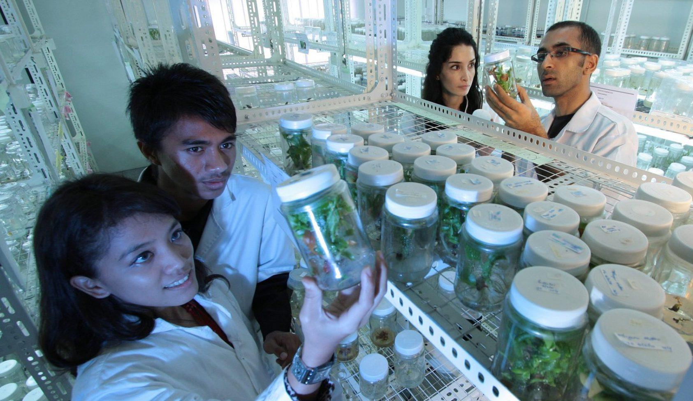

Conoce nuestros proyectos de investigación
|  |
En estas imagenes podemos ver el buen ambiente de trabajo que encontrarás en nuestra universidad.
Estamos buscando nuevos miembros
En nuestra universidad, estamos buscando nuevos miembros para nuestros proyectos de investigación, por lo que estamos organizando jornadas de puertas abiertas para que puedas venir a conocer nuestras instalaciones, así como al profesorado.
Se van a organizar diversas charlas, en las que se hablará de los diversos proyectos que se están llevando a cabo actualmente, así como los previstos para un futuro. Podrás hablar tanto con el profesorado como con los alumnos que participan en las investigaciones.
Víctor Portugués Martínez, 15 de febrero de 2021
Información sobre matriculaciones
Si estás interesado, en la jornada de puertas abiertas daremos la información necesaria para matricularse, donde se especificarán también los requisitos para poder entrar en el programa de investigación